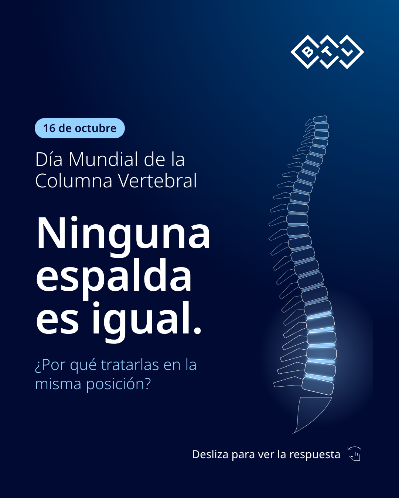
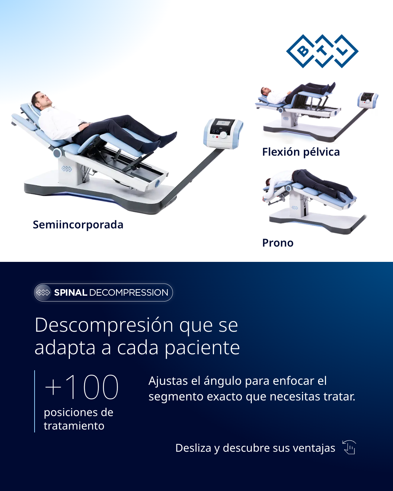
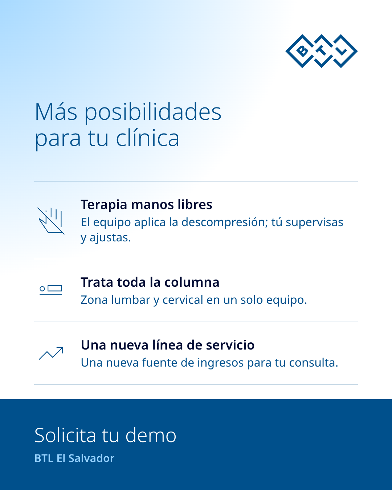

Este 16 de octubre, Día Mundial de la Columna Vertebral, piensa en tu paciente con ciática que ya probó medicamentos e infiltraciones. ¿Qué más le ofreces? BTL Spinal Decompression es descompresión vertebral no invasiva para hernia discal, lumbalgia crónica y dolor irradiado como la ciática o la radiculopatía. Aplica fuerzas robóticas con la precisión de unas manos, en unas 10 sesiones de 1 a 2 por semana, según cada caso. ¿Tienes una clínica de fisioterapia o rehabilitación en El Salvador? Escríbenos "DEMO" por mensaje directo y agendamos tu demo.